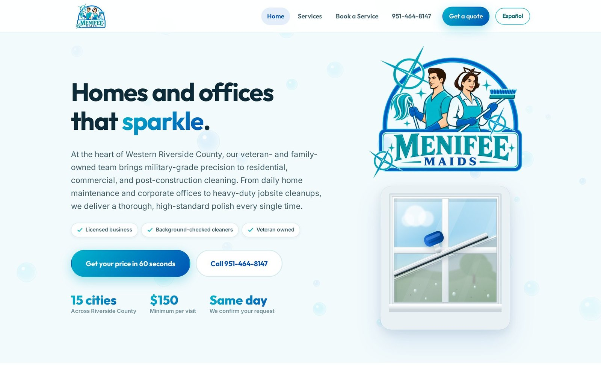
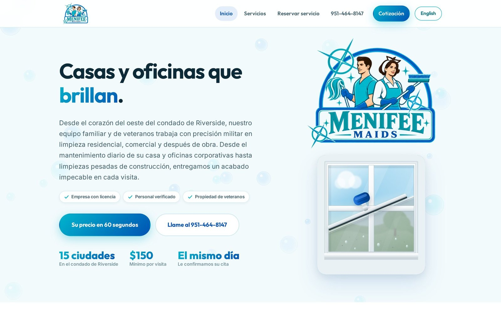
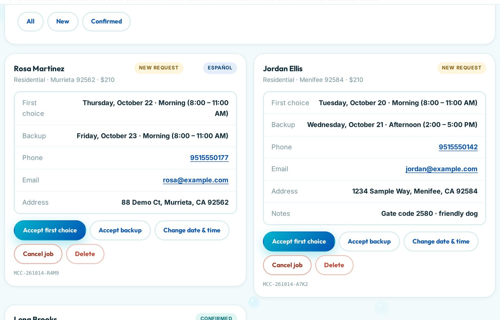
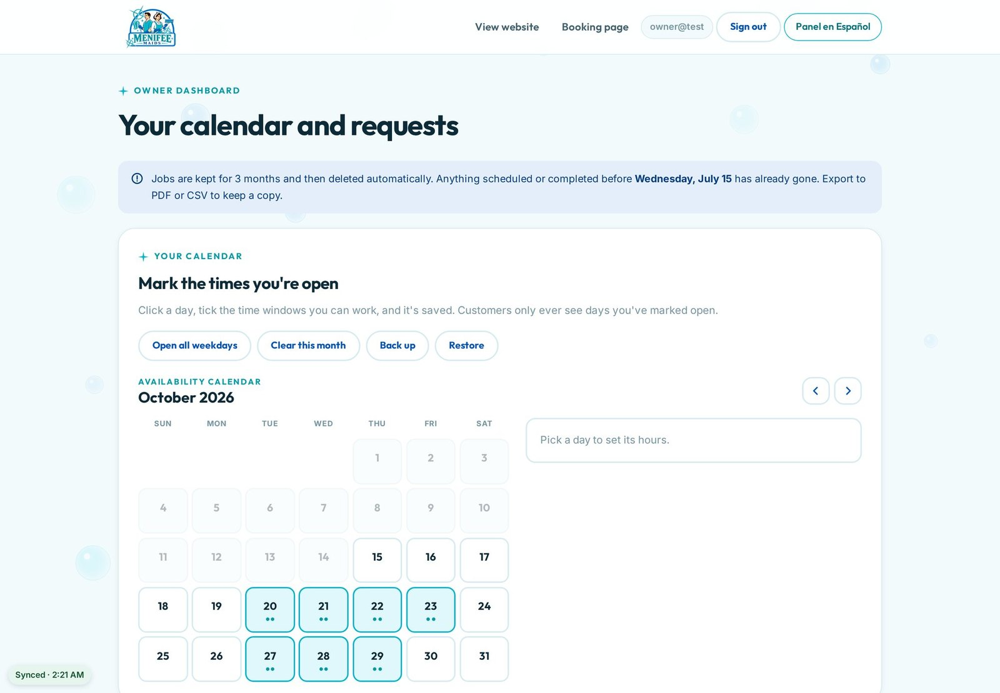
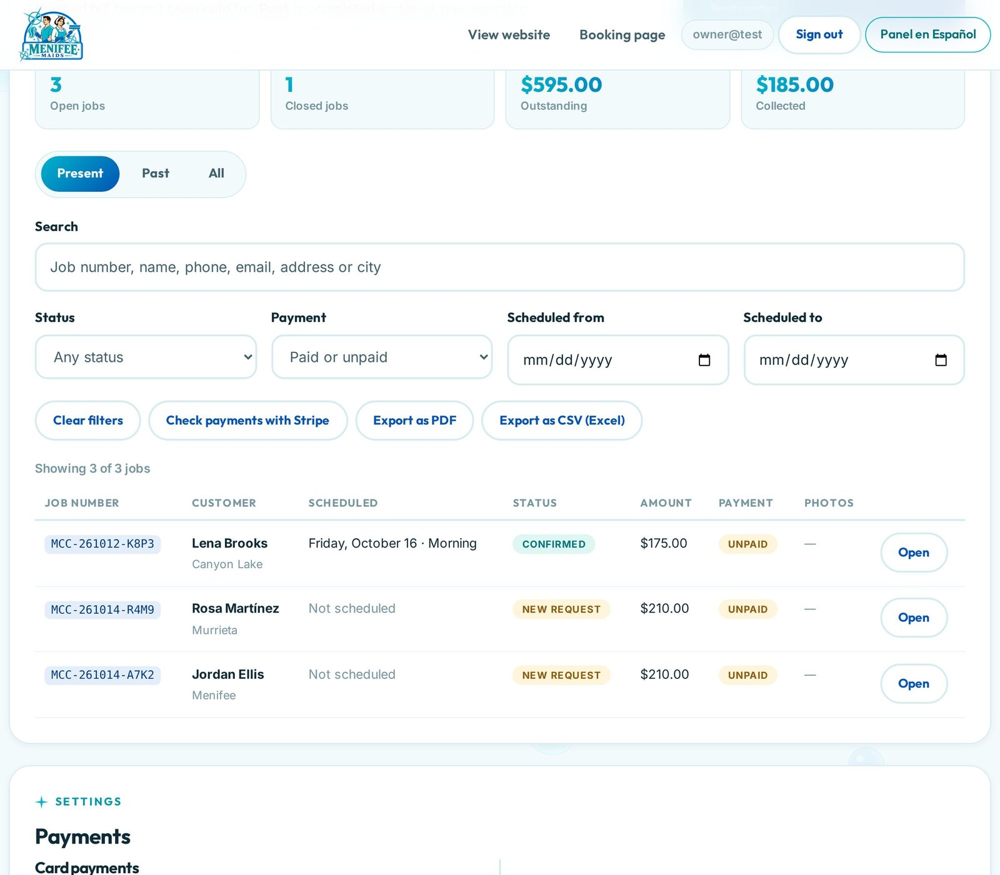
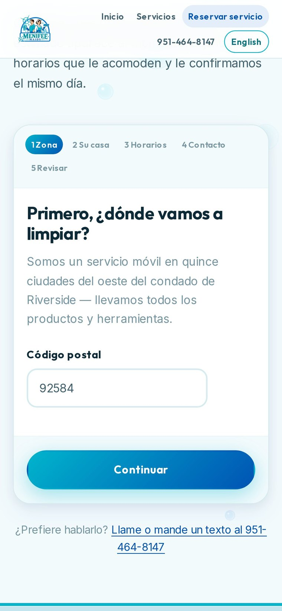
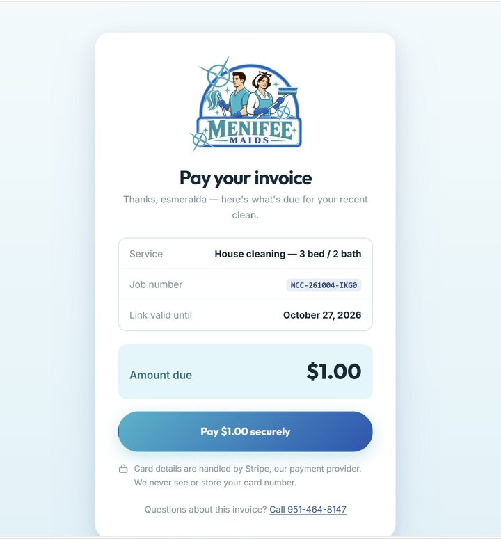
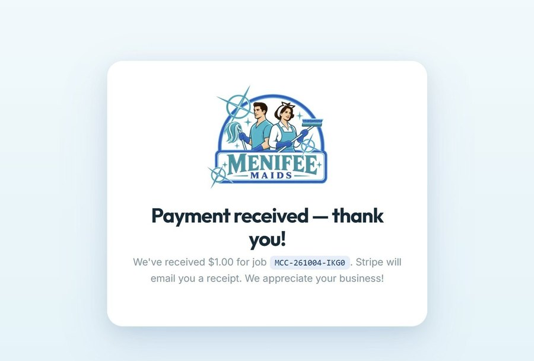
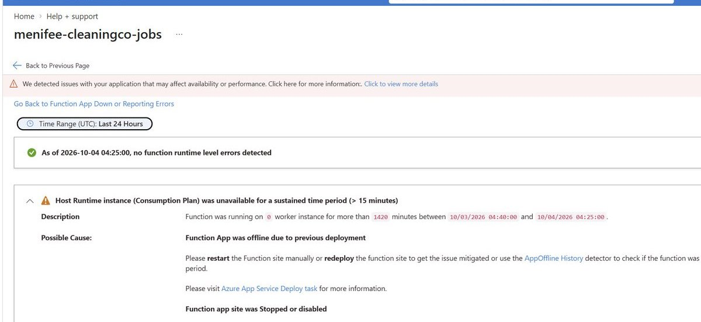
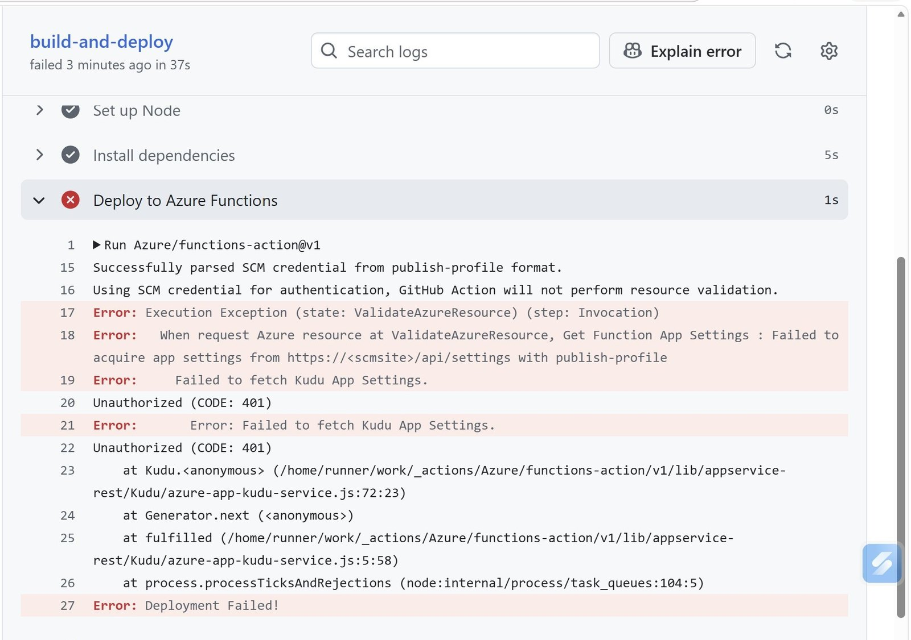

Engagement
Phone calls, text threads and a paper calendar
The constraints were the brief, and the hardest one was the budget.
Menifee Maids is a family-owned residential, commercial and post-construction cleaning company serving fifteen cities in Western Riverside County, California. The owner works on job sites most of the day, often with a weak phone signal; a part-time helper assists. Before this engagement, requests arrived by phone and text, availability lived on paper, and there was no reliable record of which jobs had been paid.
I was responsible for the whole engagement: requirements analysis, solution architecture, Azure provisioning, front-end and API development, payments integration, CI/CD, DNS and email deliverability, security, test design, production troubleshooting, vendor escalation and client documentation.
The five problems
- Lost and double-booked requests — no single source of truth for who asked for what, and when
- A language gap — much of the service area is Spanish-speaking, but competitors' sites are English-only
- Slow payment collection — invoices by hand, no card payments, no automatic reconciliation
- A phone-first reality — any tool had to work one-handed, between jobs, on a poor connection
- A tight budget — a two-person business cannot carry a meaningful monthly software bill
| # | Success criterion | Result |
|---|---|---|
| S1 | A customer can book online in either language and receive a confirmation | Met verified in production |
| S2 | Staff on different phones see the same jobs within a minute | Met 45-second pull, ~1.5 s push |
| S3 | Card payments reconcile without manual entry | Met webhook verified sandbox and live |
| S4 | No booking is lost if a backend component fails | Met direct write with queue fallback |
| S5 | Fixed monthly infrastructure cost near zero | Met ~$1.70/month projected |
| S6 | Background reminders and archiving run unattended | Met after the incident in section 06 |
System
One front door, seven services behind it
Customers and staff only ever talk to the Static Web App and its built-in API.
| Component | Plan / configuration | Responsibility |
|---|---|---|
| Website and dashboards | Static Web Apps Free · Node 22 managed API | 20 pages, offline shell, built-in Microsoft sign-in and route rules |
| HTTP API | 13 managed endpoints | Bookings, jobs, payments, photos, messaging, settings, health |
| Background jobs | Linux Consumption · system-assigned identity | Reminders, archiving, customer roll-up, queued bookings |
| Database | Cosmos DB for NoSQL · free tier · 1,000 RU/s shared | Jobs, payments, availability, settings, customers |
| Files and queue | StorageV2 · TLS 1.2 · HTTPS only · no public blobs | Job photos, archive, booking fallback queue and poison queue |
| Communication Services · custom domain · SPF/DKIM verified | All customer and owner email, sent from the client's own domain | |
| Payments | Stripe · Checkout Sessions · restricted key | Card collection, signed webhooks, payouts, receipts |
| Delivery | GitHub repository + Actions | Two workflows deploying site/API and the Function App on every push |
What the free tier costs you
Managed functions inside Static Web Apps are HTTP-only and have no managed identity. Two consequences follow, and both shaped the design: the website's API holds keys in environment variables rather than using identity-based access, and anything on a timer or queue trigger needs a separate Function App. That background app runs on its own plan with a system-assigned identity holding database and storage roles, so no secrets live on it at all.
One region throughout, because Static Web Apps is not offered in the region originally considered.


Identity and access
Staff sign in with Microsoft accounts through the platform's built-in provider. There is no app registration to maintain and no passwords are stored. Roles are custom and assigned by invitation, and access is enforced twice: route rules stop unauthorized requests at the edge, and each API function re-checks the caller's role from the platform-signed principal header.
One deliberate detail in that check: being authenticated deliberately does not count. It only means the caller has a Microsoft account, which anyone can get. The custom roles are what actually restrict access.
Offline
The office is a job site
An offline-first dashboard with a three-way merge, because staff work from phones on a weak signal.
The dashboards install to a phone's home screen and read and write a local working copy. A sync engine pulls every 45 seconds — and on open and on reconnect — pushing about 1.5 seconds after a change. Merging compares local against cloud against a last-agreed snapshot, which is what makes conflicts resolve deterministically rather than by luck.
A device never pushes before its first successful pull, so a stale copy cannot overwrite newer data. The mass-disappearance guard exists because the failure it prevents — a sync bug quietly emptying the business's job history — is unrecoverable in a way that a sync delay is not.




Decisions
Ten records, context and consequence
Each significant decision written the way an architecture decision record is written on a team.
| Decision | Why | Consequence accepted |
|---|---|---|
| Static Web Apps Free with a managed API | Hosting, API and staff sign-in at no fixed cost | One deployment, free TLS and custom domain — but HTTP-only functions with no managed identity, so scheduled work needs a separate app |
| Cosmos DB free tier, manual throughput | Job records change shape as the business evolves; cost must stay near zero | Schemaless JSON suits evolving records. Autoscale deliberately avoided because it can climb past the free allowance |
| Per-item TTL instead of a purge job | Closed jobs should not accumulate forever | Deletion is free and cannot fail — but the archive job becomes load-bearing, which raised the priority of fixing the Function App |
| Bookings write directly, queue as fallback | The original design queued every booking; when the background app could not start, bookings sat in the queue | The customer path no longer depends on the background tier. The fallback writer is create-only, so a delayed copy cannot overwrite staff edits |
| Offline-first with three-way merge | Staff work from job sites with a weak signal and several devices | Fast and offline-capable; conflicts resolve deterministically and a guard restores rather than deletes |
| Server-side Checkout per invoice | A single pasted link cannot vary the amount and can be tampered with | Prices cannot be changed by editing a link; payments mark themselves paid; card data stays with Stripe, keeping PCI scope minimal |
| Human-reviewed customer messaging | The client wanted control over the wording of every message | One extra tap per message, accepted deliberately in exchange for control |
| Photos by attachment and private link | Web pages cannot attach files to an email or text opened in another app | The platform sends the email itself with attachments; texts carry an HMAC-keyed link that cannot be guessed or edited to show another job |
| Background jobs on a separate app with managed identity | Timers and queue triggers are unavailable in managed functions | No secrets on that app. Its plan reaches end of support in 2028, so migration is on the roadmap |
| Business-time scheduling | Visitors could be anywhere; the business runs on Pacific time | No past or imminent slots offered, and reminders fire at 5 PM local rather than 5 PM UTC |
Payments
The browser never decides the amount
Server-authoritative checkout, reconciled by a signature-verified webhook.
A payment request reads the stored amount and status from the database, creates a Checkout Session on the server, and redirects the customer to the payment provider's own page. The customer pays there; a signed webhook arrives, is verified, and marks the invoice paid. Every dashboard shows "Paid" on its next sync, and the job closes when it is both done and paid.
The live key is a restricted one carrying exactly two permissions: write Checkout Sessions, read Payment Intents. That is the entire capability a compromised key would grant.


Incident
A production component that never started
The most demanding problem of the engagement. The business kept running throughout.
Symptom. Both the background Function App and its deployment endpoint returned 503. The portal showed runtime version "Error" and the functions list would not load.
Impact. Reminders, archiving and customer roll-ups could not run. Customer bookings were unaffected, because of a mitigation shipped while the cause was still unknown.
Root cause. The app had been created on Node.js 24, which the CLI recommended after refusing Node 20 as end-of-life. The hosting plan did not support Node.js 24, so no worker could start.

| Step | Finding |
|---|---|
| App created from Cloud Shell | Node 20 refused as end-of-life; Node 24 used, as advised |
| Publish from the workstation | Wrong account and tenant, then a missing worker runtime — both fixed, neither the cause |
| Publish with an explicit language flag | Package uploads, but syncing triggers fails |
| Remote build and CI workflow | Deployment endpoint unavailable (503) |
| Configuration review | Publishing restrictions, settings and network access all ruled out |
| Attempted runtime switch from PowerShell | The pipe character in the version string was read as a shell pipe; the change never applied |
| Diagnose and solve problems | The app was running on zero worker instances |
| App rebuilt from scratch | Same fault reproduced, so not a corrupted app |
| Mitigation shipped | Bookings written directly to the database; customers unaffected |
| Support case opened | Full evidence attached; vendor reproduced it |
| Vendor response | Node.js 24 unsupported on this plan; Node 22 advised |
| Fix applied | Node 22 in the portal; runtime healthy immediately; workflow aligned |
| Deploy fails with 401 | Publish profile stale; secret replaced |
| Deploy succeeds | All five functions deployed |

Other case studies, same loop
A dozen smaller issues followed one pattern: reproduce, hypothesize, change one variable at a time, fix the cause rather than the symptom, then add a check so it cannot return silently.
- Bookings never reached the database. The page and dashboard shared one browser's storage, so a "successful" booking existed only on that device. Fixed by server-side writes and the sync engine
- Past time slots were offered. The date was checked but not the time of day, and the visitor's time zone was used. Fixed with business-time filtering, a one-hour lead and API-side enforcement
- Photos went missing from texts and emails. Browsers cannot attach files to another app. Fixed with platform-sent email carrying attachments, and private HMAC-keyed links for texts
- Customers were emailed before review. Messages sent automatically. Fixed with a preview-first panel requiring an explicit Send
- English text in the Spanish portal. A sentence split around a link and a template table misused. Fixed, and a full-portal scan now runs clean
- Business mailbox closed. Found when a test email bounced; replaced across 31 places in 14 files
Quality
Tested against the real code
Not against mocks of my own API — against the actual handlers, every release.
A local harness runs the real API handlers behind a small HTTP server, with in-memory stand-ins for the database, blob storage, the queue, email and payments. It also simulates the platform's sign-in, so tests can act as an owner, a helper or an anonymous customer. A headless browser then drives the real pages at desktop sizes and as a phone, with simulated clocks and time zones where needed.
| Suite | Checks | What it proves |
|---|---|---|
| Cross-device sync | 25 | Two staff phones and a customer stay consistent through create, confirm, reschedule, pay, photos and delete |
| Customer notifications | 29 | Every message type in both languages; nothing sends without an explicit Send |
| Payments, live mode | 23 | Server-set amounts, tampered links rejected, forged webhooks rejected, paid status syncs |
| Payments disabled path | 7 | Graceful behaviour before card payments are switched on |
| Photos and attachments | 22 | Attachment limits, private photo page, HMAC links, Spanish variants |
| QR hand-off | 16 | Generated QR images decoded to confirm the exact number and message |
| Device detection | 4 | Phones, including desktop-site mode, get the one-tap text button |
| Background-job markers | 4 | Reminder and roll-up markers survive dashboard edits |
| Latest release features | 33 | Calendar at four times of day, an out-of-state visitor, a page left open, API rejection, helper payment links in both portals |
| Layout | 13 × 7 | No hidden menu links and no sideways scrolling from 320 px to 1,280 px |
| Spanish portal scan | All states | No English text left in the Spanish helper portal |
Every suite was rerun on every release. Visual changes were reviewed in rendered screenshots at phone and desktop sizes before shipping, and each release was verified in production with the client afterwards: cache version, sign-in, a booking, a payment and a message.
Security
Defense in depth at the edge, the API and the data
Designed in from the first phase, with the open items named.
| Area | Control |
|---|---|
| Identity | Microsoft sign-in; invitation-only custom roles; two-step verification on staff accounts; no stored passwords |
| Authorization | Route rules at the edge, plus role re-checks in every function from the platform-signed principal header |
| Secrets | Environment variables and encrypted CI secrets only; nothing in the browser or the repository |
| Managed identity | The background Function App uses identity-based roles and holds no keys |
| Payments | Hosted checkout; amounts from the database; signed webhooks; restricted live key with two permissions |
| Files | Private container; short-lived signed upload and read URLs; photos re-encoded on the device, which strips location data |
| Customer links | Unguessable payment tokens; HMAC-protected photo links; expiry and replacement of payment links |
| Transport | HTTPS only; TLS 1.2 minimum on storage and the database |
| Messaging | Opt-in recorded with a timestamp; opt-out wording enforced; carrier registration required before automated SMS |
| Cost guardrails | Free tier with a throughput cap; budget alert; upload and attachment limits |
Open items, stated rather than omitted
- Rotate the keys and deployment credential that were visible during setup — scheduled in the roadmap
- Replace sample testimonials with genuine reviews before promoting them
Privacy-preserving documentation
Preparing the report was itself a security exercise. Captures exposing storage keys, a messaging access key, signed storage URLs or a telemetry key were excluded outright. Personal details used as test data — phone numbers, email addresses, a street address, an IP address and a scannable QR code — were located by OCR and blurred automatically, and a deployment-credential line was redacted.
Operations
Cost, releases and handover
The client can deploy a release with no developer present.
| Line | Plan | Monthly |
|---|---|---|
| Static Web Apps | Free | $0.00 |
| Cosmos DB | Free tier, 1,000 RU/s shared | $0.00 |
| Azure Functions | Consumption | $0.00 |
| Blob storage (~5 GB) | Standard LRS | ~$0.15 |
| Storage queue | Standard | ~$0.01 |
| Application Insights | Free allowance | $0.00 |
| Email (~800 messages) | Pay as you go | ~$0.30 |
| Domain (amortized) | Registrar | ~$1.25 |
| Total without SMS | — | ~$1.70 |
| SMS: number, campaign, ~600 segments | Pay as you go | ~$8.80 |
Figures come from the project's cost model at roughly 200 jobs a month. Enabling automated texting adds a one-time carrier registration fee, and card payments carry the provider's standard per-transaction fee. A budget alert guards against unexpected changes.
Release procedure
Each release is packaged as a versioned archive with a file list and a cache-version bump, compared against the client's last deployed version to produce the exact list of changed and new files. A PowerShell script unpacks and checks the version, refuses to run on a repository with uncommitted changes, copies the files, stops on untracked files, then commits and pushes. CI deploys; the client confirms the green check and runs the post-release checks.
That refusal to run against a dirty repository is the detail I would defend hardest. The script is operated by someone who is not a developer, and the failure it prevents — silently committing work in progress — is one they would have no way to diagnose.
Status
Delivered, and what comes next
Ordered by value to the client.
| Capability | State | Note |
|---|---|---|
| Bilingual public site and booking | Live | Instant pricing, real availability, confirmation in the customer's language |
| Staff dashboards with cloud sync | Live | Installable, offline-capable, owner and helper roles in both languages |
| Card payments and reconciliation | Live | Verified in live mode with a real transaction |
| Customer messaging and photos | Live | Reviewed before sending; photos by attachment and private link |
| Background reminders and archiving | Live | Restored after the incident in section 06 |
| Key rotation and launch content | Next 30 days | Rotate setup-era credentials; real reviews; cancellation and refund policy; alerts on failed background jobs |
| Company texting number | 1–3 months | One business number with replies in an owner-only inbox; needs carrier registration |
| Hide customer contact details from helpers | 1–3 months | Protects the client base as the team grows |
| Plan migration | 3–12 months | Move background jobs ahead of the hosting plan's end of support in 2028 |
| AI quoting and job summaries | Proposed | Customers photograph rooms; a vision model fills in counts and condition, while pricing still comes from the client's own rules |
Lessons
- Check the support matrix, not just the tool's advice. One unsupported runtime version stopped every background job
- Keep the critical path short. Anything customers depend on shouldn't hinge on a background component
- Verify where data lands, not what the screen says. A local-only dashboard looked like it worked
- Test assumptions about external systems. One test email exposed a closed mailbox
- Design with the platform's limits. Attachments, texting and contact selection all needed alternate paths
- Document as you go. The screenshot log made the support case, the client runbooks and the report possible